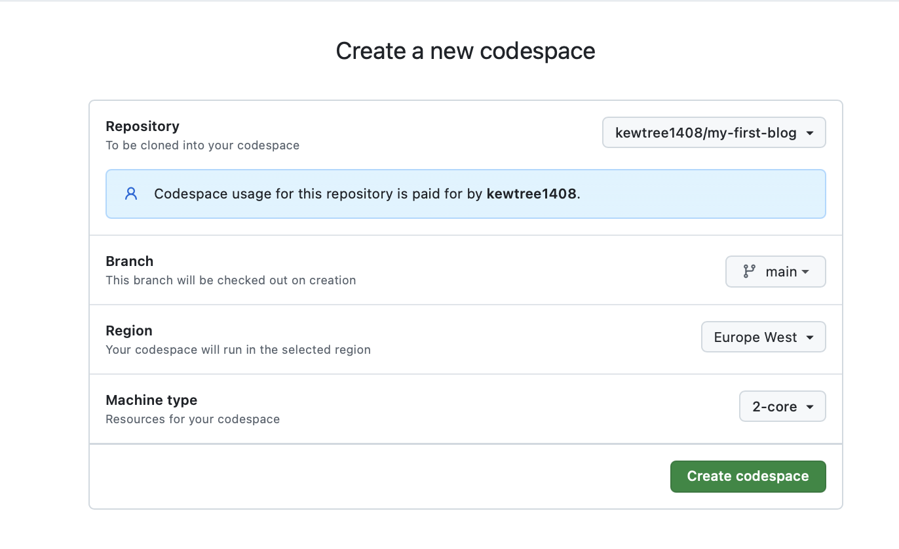
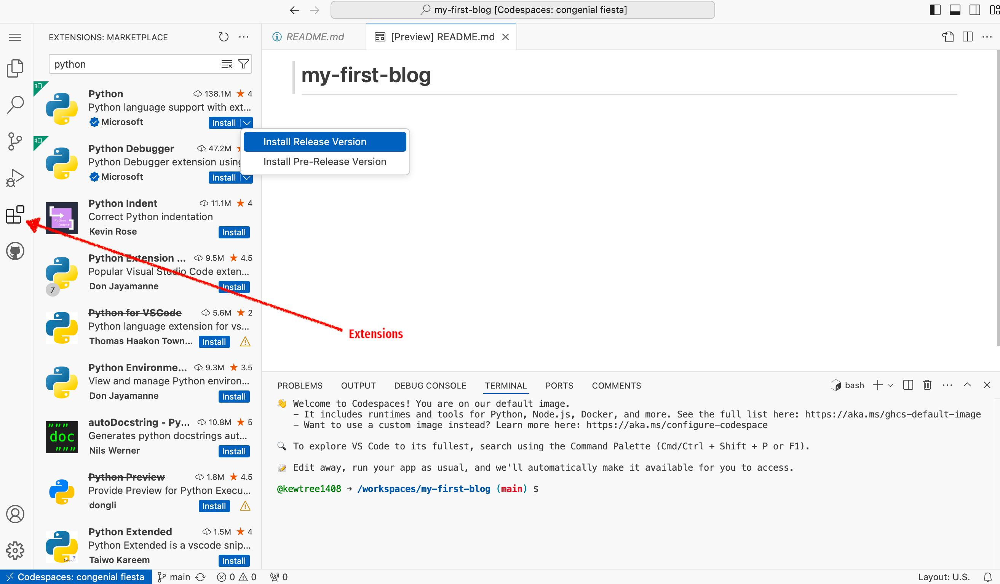

Installation (Chromebook)
Chromebook setup
If you already worked through the installation steps, no need to do this again – you can skip straight ahead to Introduction to Python.
For people using a Chromebook or those with limited memory on their laptops, we recommend using a cloud IDE environment. This allows you to interact with the command line, Python, and Django directly through your browser, where a code editor is already installed. In case you using this instruction, some steps of the tutorial don't have to be done again ("Deploy/Git" part ). You’ll find a more detailed explanation in the “Deploy/Git” section.
Your installation experience will be a little different.
Go to GitHub.com and sign up for a new, free user account. Be sure to remember your password (add it to your password manager, if you use one).
Create a GitHub project. Visit this link, use "my-first-blog" name for your project, and make it public (needed for deployment, you can make it private later). Also, add a
README.mdand.gitignorefile.
Start a Codespace. Go to GitHub Codespaces and select the repository you just created. Click "Create Codespace".

Wait a little bit and you'll see something like that:

The VSCode editor will open for you automatically. If you see a notification that says "Install Python", please click on it. If not prompted, click the "Extensions" icon on the left sidebar in the Codespace editor. Search for "Python" and click "Install."

The bash terminal (similar to Linux) is at the bottom of the page.
By default, the GitHub Codespace environment will be deleted after 1 month (this applies only to the environment, not your code). To prevent auto-deletion, you can adjust the settings on the page: https://github.com/codespaces

Continue with the tutorial. Follow the next steps from the section Set up virtual environment and install Django. Follow than sections for Ubuntu/Linux. Use the Codespaces command line (terminal), accessible through your browser.